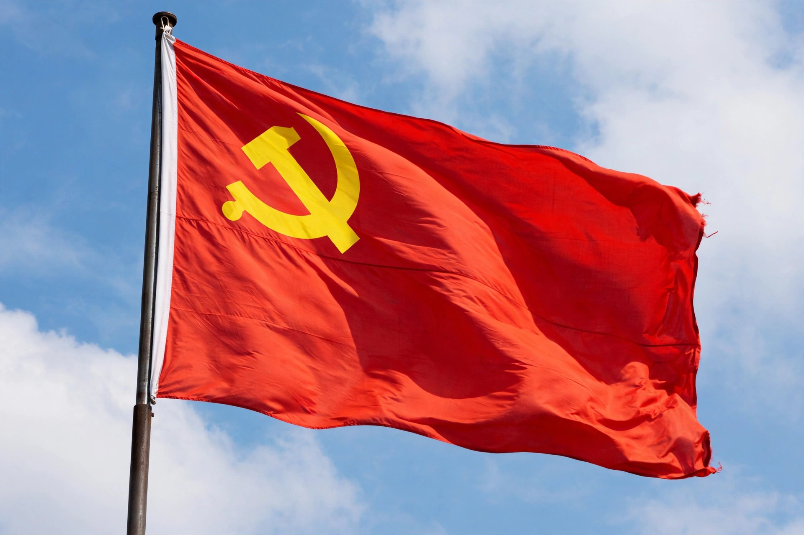

Communist Party of China
| Communist Party of China | |
|---|---|
| General Secretary | Xi Jinping |
| Founded | 1921; first congress in Shanghai and Jiaxing |
| Headquarters | Zhongnanhai, Beijing |
| Membership | c. 99 million (2023–24) |
| Ideology | Marxism–Leninism; socialism with Chinese characteristics |
| Newspaper | People's Daily |

[Image: the flag of the Communist Party of China — red flag with the gold hammer-and-sickle party emblem in the canton, waving]The Communist Party of China (CCP), officially the Chinese Communist Party, is the founding and sole ruling political party of the People's Republic of China (PRC). Founded in 1921, it has governed mainland China since the proclamation of the PRC in 1949, and it is by membership the largest political party in the world, with roughly 99 million members.
The party's highest body is nominally the National Congress, held every five years, which elects the Central Committee; real decision-making power rests with the Politburo and its Standing Committee, and above all with the party's top leader, who holds the posts of General Secretary of the Central Committee, Chairman of the Central Military Commission and (since 1993, concurrently) President of the PRC. Xi Jinping has held these offices since 2012–2013.
History
The party was founded in 1921 by Marxist intellectuals including Chen Duxiu and Li Dazhao, with assistance from the Communist International; its first congress met in Shanghai's French Concession and, after police interruption, concluded on a boat on South Lake in Jiaxing. Thirteen delegates attended. In the 1920s the party first allied with, then was violently purged by, the Kuomintang (Nationalist Party) in 1927, driving it into rural insurgency.
Under Mao Zedong, the party survived the Long March (1934–35), built base areas centred on Yan'an, fought both the Japanese invasion and, after 1946, a full-scale civil war against the Nationalists. Victory in 1949 led to the founding of the People's Republic, with the Nationalists retreating to Taiwan. The Mao era brought land reform, the Great Leap Forward (1958–62) and the Cultural Revolution (1966–76), campaigns that caused vast social and economic disruption.
After Mao's death in 1976, Deng Xiaoping launched "reform and opening up" from 1978, introducing market mechanisms under continued party rule and presiding over four decades of rapid growth. The party suppressed the 1989 Tiananmen Square protests, after which Jiang Zemin, Hu Jintao and Xi Jinping succeeded in turn to the leadership; under Xi, the party has emphasised centralised control, anti-corruption campaigns and "socialism with Chinese characteristics" for a new era.
Organisation and ideology
The party is organised on Leninist principles of democratic centralism: lower bodies elect higher ones, but discipline binds all members to higher decisions. Its official ideology is Marxism–Leninism as adapted through Mao Zedong Thought, Deng Xiaoping Theory and Xi Jinping Thought, all enshrined in the party constitution. The CCP controls the state through party committees embedded in government, courts, state-owned enterprises and universities, and commands the People's Liberation Army through the Central Military Commission — in party doctrine, "the party commands the gun".
The party's role links it directly to China's economic system: five-year plans, industrial policy and the management of State-owned enterprise, state-owned enterprises and the commanding heights of the Chinese economy all run through party institutions, making the CCP central to the study of the party-state.